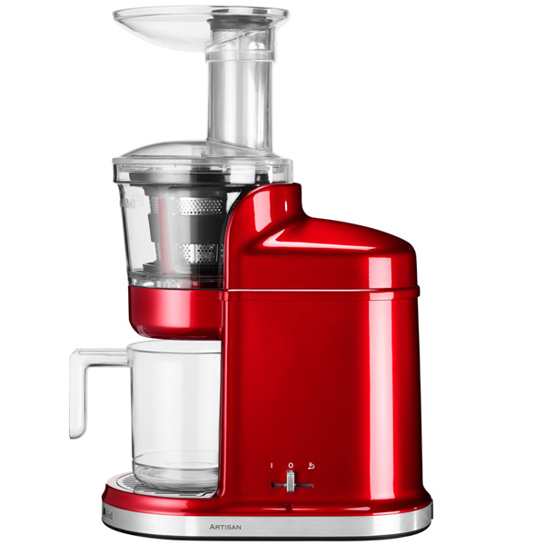

Соковыжиматель BORK S610 VS KitchenAid 5KVJ0111
Современная техника отличается от ретро тем, что экономит самое ценное на сегодняшний день – время. Ретро дизайн - это на любителя, а вот ретро технологии это вчерашний, а быть может и позавчерашний день.
KitchenAid 5KVJ0111
Преимущества KitchenAid, которые пытаются продать:
- Дизайн и выбор цветов
- Срок гарантии 5 лет
- Международная компания, на рынке с 1919 года
- KitchenAid переводится, как кухонный помощник
- Литой металлический корпус
- Три сетки-фильтра для сока (с мякотью и без)
- Диск для измельчения перед отжимом
Характеристики KitchenAid:
- Потребляемая мощность: 230 Вт
- Количество скоростей: 1 и реверс
- Количество оборотов: 80 об/мин
- Размер загрузочного желоба: 5 см х 6,5 см
- Загрузочный желоб с лотком
- Объём стакана для сока 800 мл
- Фильтр от пены
- Механическая защита от неправильной сборки
- Страна производства КНР
Преимущества сокопресса BORK S610:
- За счёт более высокой мощности сокопресс BORK идеально справляется с плотными продуктами
- Загрузочный желоб диаметром 77 мм сократит время на подготовку продуктов при приготовлении сока
- Толкатель со специальными направляющими обеспечат лёгкое поступление плодов в резервуар для отжима
- Цельный шнек из материала Ultem и отсутствие лезвия для предварительной обработки продуктов дают возможность получать сок из ягод, фруктов, овощей и даже трав и орехов
- Емкости для сока и жмыха объёмом 1,2 л обеспечат удобную работу с большим количеством продуктов
- Клапан капля-стоп и мерная шкала на сокораспределителе дают возможность смешивать коктейли прямо в корпусе сокопресса
- Сокопрессом можно пользоваться даже мокрыми руками, колпачок на кнопке включения защитит корпус от попадания влаги
- Современная магнитная защита от неправильной сборки исключает возможность поломки механизма (у KitchenAid защита от неправильной сборки механическая)
- Сокопресс разработан и сделан в Корее
Покупая KitchenAid, вы покупаете не только ретро дизайн, но и ретро технологии.